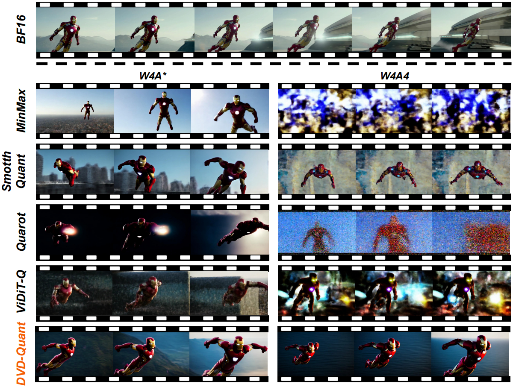

Hanxuan Li 李瀚轩
 |
Hanxuan Li |
About me
I'm a third year undergraduate student (2022.9 - Present) in Turing Class, Chu Kochen Honors College, Zhejiang University.
My research interests now focus on two directions in deep learning:
- Investigating the mathematical principles behind deep learning models to explain its empirical successes and failure modes.
- Designing efficient algorithms to accelerate inference/training and reduce memory overhead.
I have studied post-training quantization on video generation models (DVD-Quant). I'm also exploring RL for LLM reasoning recently.
News
Research directions and Selected Papers
(* denotes equal contribution, † denotes corresponding author)
|  |
DVD-Quant: Data-free Video Diffusion Transformers Quantization
|